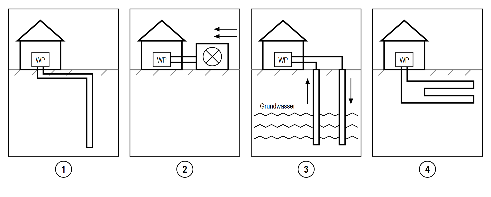

Wärmepumpe 2 – Woher kommt die Wärme?
Heute lernst du: Woher eine Wärmepumpe ihre Wärme holt.
So arbeitest du: Lies zuerst den Infokasten. Mach dann die Aufgaben darunter. Die Antworten findest du im Infokasten.
Infokasten A: Drei Wärmequellen
|
Die Wärmepumpe holt Wärme aus der Umwelt. Es gibt 3 Wärmequellen: 1. die Luft 2. das Erdreich 3. das Grundwasser Gas und Öl sind keine Wärmequellen für die Wärmepumpe. Sie verbrennt nichts. Der Name der Wärmepumpe verrät die Wärmequelle: |
| Name | Woher kommt die Wärme? |
|---|---|
| Luft-Wasser-Wärmepumpe | aus der Außenluft |
| Sole-Wasser-Wärmepumpe | aus dem Erdreich |
| Wasser-Wasser-Wärmepumpe | aus dem Grundwasser |
|
• Merkregel: Das erste Wort sagt, woher die Wärme kommt. Das zweite Wort sagt, wohin sie geht: ins Heizwasser. • Sole = Wasser mit Frostschutzmittel. Sie fließt in Rohren durch die Erde und bringt die Wärme zur Wärmepumpe. • Achtung: Die Sole ist nicht das Kältemittel. Das Kältemittel bleibt immer in der Wärmepumpe. |
Aufgabe 1 ★ leicht
a) Lies Infokasten A. Woher kommt die Wärme? Schreib den Buchstaben ins Kästchen.
Achtung: Ein Buchstabe bleibt übrig.
|
|
b) Was ist Sole? Kreuze an.
| das Kältemittel | Wasser mit Frostschutzmittel | Grundwasser |
Infokasten B: Wärme aus der Luft
|
• Ein Außengerät steht neben dem Haus. Ein Ventilator saugt die Außenluft an. • Man braucht keinen Graben und keine Bohrung. Darum ist sie am einfachsten und am billigsten einzubauen. • Sie funktioniert sogar bei −20 °C. • Aber: Im Winter ist die Luft am kältesten, z. B. −10 °C. Genau dann muss man am meisten heizen. • Den Ventilator hört man. Darum braucht das Außengerät Abstand zum Nachbarn und zum Schlafzimmer. |
Infokasten C: Wärme aus dem Erdreich
|
In der Erde liegen Rohre. In den Rohren fließt Sole. Es gibt 2 Arten: |
| Art | So ist es |
|---|---|
| Flach- kollektor | Die Rohre liegen waagrecht (flach liegend), ca. 1,5 m tief im Garten. Er braucht viel Platz, aber keine Bohrung. Über dem Kollektor darf man nichts bauen (keine Garage, keine Terrasse). |
| Tiefen- sonde | Eine Firma bohrt senkrecht (gerade nach unten), ca. 100 m tief. Sie braucht wenig Platz. Die Bohrung ist teuer. Tief in der Erde ist es das ganze Jahr gleich warm: ca. 10 °C. |
Aufgabe 2 ★ leicht
Lies Infokasten A, B und C. Stimmt der Satz? Kreuze an: richtig (R) oder falsch (F).
| Satz | R | F |
|---|---|---|
| Ein Flachkollektor liegt ca. 100 m tief. | ||
| Über einem Flachkollektor darf man eine Garage bauen. | ||
| Die Sole ist dasselbe wie das Kältemittel. | ||
| Eine Luft-Wärmepumpe funktioniert auch bei −10 °C. |
Infokasten D: Wärme aus dem Grundwasser
|
• Man braucht 2 Brunnen: – Der Saugbrunnen holt das Grundwasser herauf. – Der Schluckbrunnen bringt das abgekühlte Wasser zurück in die Erde. • Grundwasser hat das ganze Jahr 8 bis 12 °C. Auch im Winter. • Es muss genug Grundwasser da sein. Das Wasser muss sauber sein. • Für die Brunnen braucht man eine Erlaubnis (Bewilligung) vom Amt. |
Aufgabe 3 ★ leicht
Schau dir die Bilder an. Welche Wärmequelle ist 1, 2, 3 und 4? Schreib den Buchstaben ins Kästchen.
Tipp: Schau, wo die Rohre liegen. Lies dann Infokasten B, C und D.

|
Achtung: Ein Buchstabe bleibt übrig. |
Aufgabe 4 ★★ mittel
Zu welcher Wärmequelle passt der Satz? Kreuze in jeder Zeile 1-mal an.
Tipp: Lies Infokasten B, C und D noch einmal.
| Satz | Luft | Erd- reich | Grund- wasser |
|---|---|---|---|
| hat ein Außengerät mit Ventilator | |||
| braucht 2 Brunnen | |||
| Sole fließt in Rohren durch die Erde | |||
| am einfachsten und billigsten einzubauen | |||
| Das Wasser wird aus der Erde heraufgepumpt. | |||
| mit Flachkollektor oder Tiefensonde |
Aufgabe 5 ★★ mittel
Ein Lehrling hat sich Notizen gemacht. Drei Sätze sind falsch.
a) Kreuze die drei falschen Sätze an.
| Satz | Notiz vom Lehrling | falsch |
|---|---|---|
| A | Es gibt 3 Wärmequellen: Luft, Erdreich und Grundwasser. | |
| B | Die Sole-Wasser-Wärmepumpe holt die Wärme aus dem Grundwasser. | |
| C | Das Außengerät hat einen Ventilator. | |
| D | Für Grundwasser braucht man nur 1 Brunnen. | |
| E | Tief in der Erde ist es im Winter unter 0 °C. | |
| F | Ein Flachkollektor braucht viel Platz. |
b) Mach die drei falschen Sätze richtig. Kreuze das passende Wort an.
| Satz B: Die Sole-Wasser-Wärmepumpe holt die Wärme aus … | dem Erdreich | der Luft |
| Satz D: Für Grundwasser braucht man … | 1 Brunnen | 2 Brunnen |
| Satz E: Tief in der Erde ist es das ganze Jahr ca. … | −10 °C | 10 °C |
Aufgabe 6 ★★★ schwer
a) Ein kalter Tag im Jänner. Wie warm ist die Wärmequelle? Kreuze in jeder Zeile 1-mal an.
| Wärmequelle | unter 0 °C | über 0 °C |
|---|---|---|
| Luft | ||
| Erdreich (Tiefensonde) | ||
| Grundwasser |
|
Die Wärmepumpe hebt die Wärme von der Wärmequelle bis zur Heizung hinauf, z. B. auf 35 °C. Das macht der Verdichter (siehe Wärmepumpe 1). Den Unterschied zwischen zwei Temperaturen gibt man in K (Kelvin) an. 1 K = 1 Grad Unterschied. |
b) Um wie viel K muss die Wärmepumpe die Wärme hinaufheben? Rechne und kreuze an.
Tipp: Zähl zuerst bis 0 °C. Zähl dann von 0 °C bis 35 °C.
| Luft: von −10 °C auf 35 °C | 25 K | 45 K |
| Erdreich: von 10 °C auf 35 °C | 25 K | 45 K |
c) Bei welcher Wärmequelle muss der Verdichter im Jänner am meisten arbeiten? Kreuze an.
| Luft | Erdreich | Grundwasser |
d) Kreuze das passende Wort an.
| Je kälter die Wärmequelle, desto … Strom braucht der Verdichter. | mehr | weniger |
Aufgabe 7 ★★★ schwer
Vier Familien wollen eine Wärmepumpe. Hilf ihnen.
Welche Wärmequelle passt? Schreib den Buchstaben (A–D) ins Kästchen. Warum passt sie? Schreib die Nummer (1–4) dazu.
Tipp: Lies jede Familie genau. Die wichtigen Wörter sind fett.
|
|
| Familie | Wärme- quelle | Warum? |
|---|---|---|
| Familie Berger: großer Garten mit Wiese. Kein Grundwasser. Bohren ist zu teuer. Der Nachbar will kein lautes Gerät. | ||
| Familie Huber: kleiner Garten. Kein Grundwasser. Bohren ist erlaubt. Sie wollen kein lautes Gerät. | ||
| Familie Novak: kleiner Garten. Bohren ist nicht erlaubt. Kein Grundwasser. Den Nachbarn stört ein Gerät nicht. | ||
| Familie Kaya: kleiner Garten. Viel sauberes Grundwasser. Das Amt erlaubt Brunnen, aber keine 100-m-Bohrung. Sie wollen kein lautes Gerät. |
Wie gut kannst du es schon?
Tippe bei jeder Aufgabe auf „Prüfen“. Deine Punkte stehen dann hier.
Jedes richtige Kästchen = 1 Punkt. Jedes richtige Kreuz = 1 Punkt.
| Aufgabe | 1 | 2 | 3 | 4 | 5 | 6 | 7 | Summe |
|---|---|---|---|---|---|---|---|---|
| Meine Punkte | ||||||||
| Punkte gesamt | 4 | 4 | 4 | 6 | 6 | 7 | 8 | 39 |
| ab 33 Punkte | Super! Du kennst die Wärmequellen. | |
| 22 – 32 Punkte | Lies Infokasten C und D noch einmal. Mach Aufgabe 5 und 6 noch einmal. | |
| unter 22 Punkte | Lies Infokasten A bis D. Mach Aufgabe 1, 2 und 3 noch einmal. Frag deinen Lehrer. |